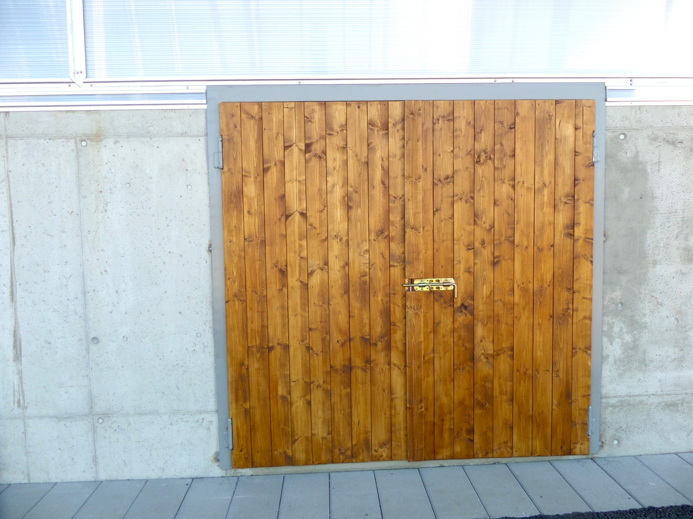
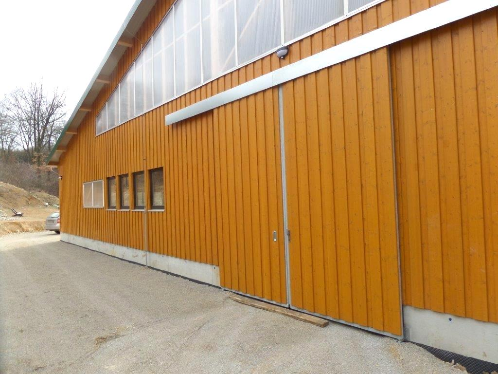
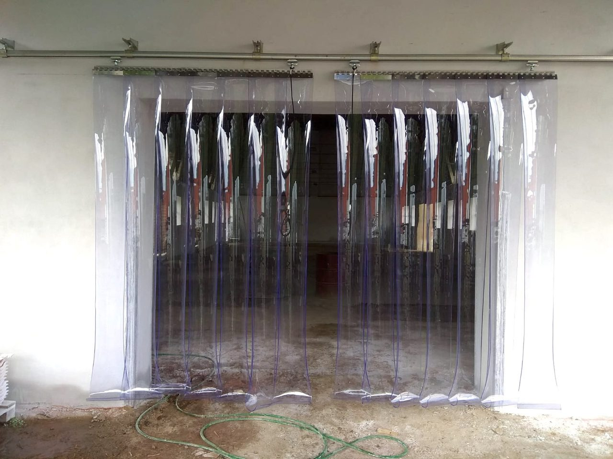
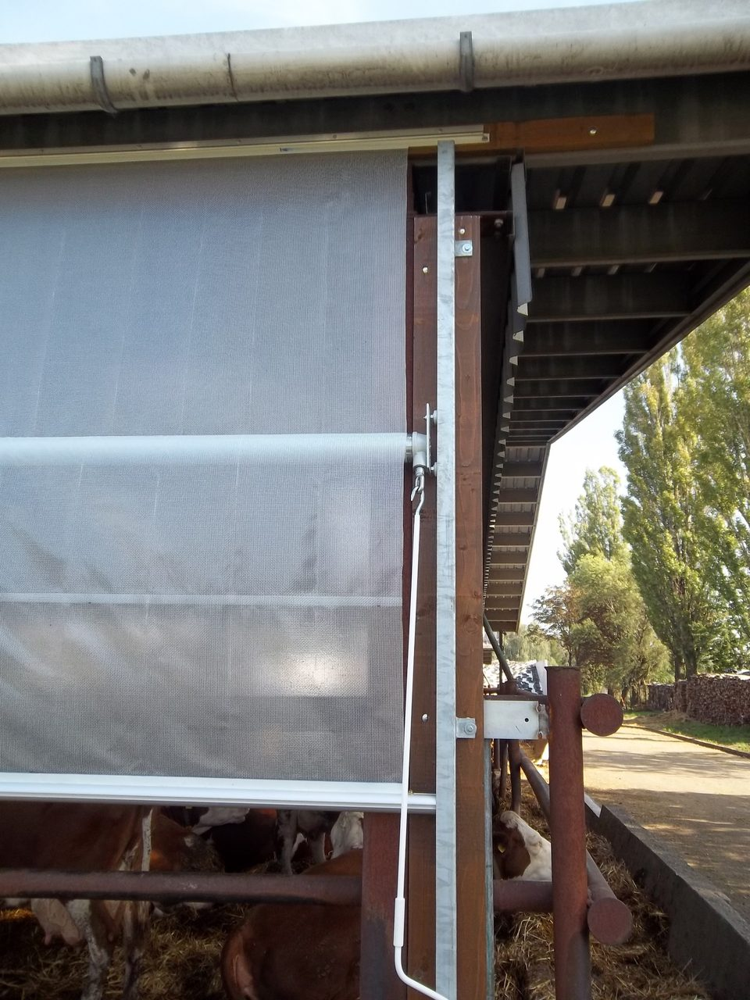
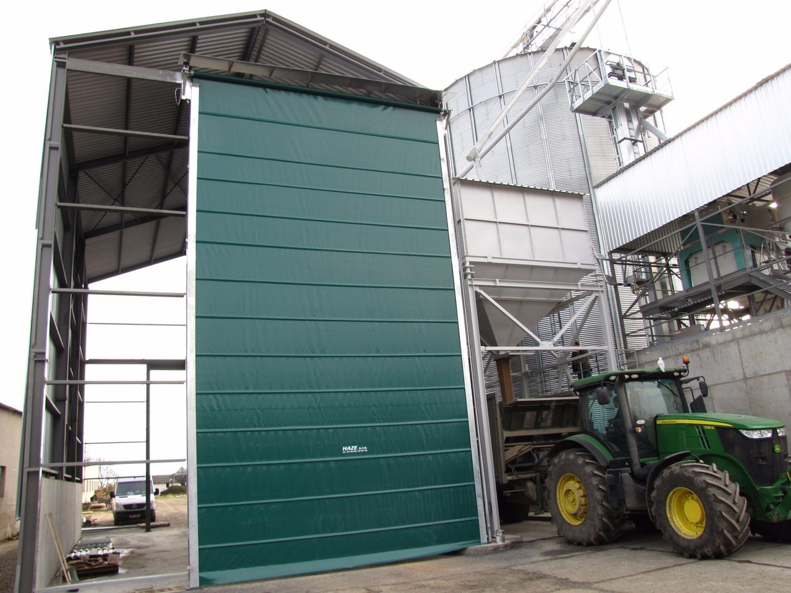

Ostatní vrata a průchody.
Kromě rolovacích vrat vyrábíme i posuvná, křídlová a středová vrata, lamelové průchody, roletové uzávěry a speciální atypická i rychloběžná vrata. Základ tvoří ocelová žárově zinkovaná konstrukce s deskovou výplní. Níže najdete detail každého provedení i srovnání v tabulce.

Každé provedení popsané.

Posuvná vrata
Vrata s ocelovou žárově zinkovanou konstrukcí a deskovou výplní, která se posouvají do strany - hodí se tam, kde není místo pro vykývnutí křídel. Vyrábíme je v jednokřídlém i dvoukřídlém provedení. Na požádání doplníme zastřešení střechy.
| Konstrukce | Ocel žárově zinkovaná, desková výplň |
|---|---|
| Provedení | Jednokřídlé i dvoukřídlé |
| Otevírání | Posuvné do strany |
| Volitelně | Zastřešení střechy na požádání |
| Hodí se na | Vjezdy, kde není místo pro vykývnutí křídel |
Křídlová vrata otvíravá
Klasická kyvná otevírací vrata s ocelovou žárově zinkovanou konstrukcí. Vyrábíme je v jednokřídlém i dvoukřídlém provedení. Hodí se na běžné vjezdy, kde je kolem dost místa pro vykývnutí křídel.
| Konstrukce | Ocel žárově zinkovaná |
|---|---|
| Provedení | Jednokřídlé i dvoukřídlé |
| Otevírání | Kyvné, otvíravé |
| Hodí se na | Vjezdy s dostatkem místa pro vykývnutí křídel |

Lamelové průchody a roletové uzávěry
Tam, kde nejsou potřeba pevná vrata, je nahradíme lamelovými průchody nebo izolovanými hliníkovými roletovými uzávěry. Lamelové průchody dodáváme v různých tloušťkách a barvách, volitelně s odnímatelným závěsem, do maximální výšky 2500 mm. Hliníkové roletové uzávěry jsou izolované a ovládají se kompenzační pružinou s možností uzamčení.
| Lamelové průchody | Více tlouštěk a barev, volitelně odnímatelný závěs |
|---|---|
| Max. výška průchodu | 2500 mm |
| Roletové uzávěry | Izolované hliníkové, kompenzační pružina s možností uzamčení |
| Hodí se na | Vnitřní průchody mezi sekcemi, kde stačí lehký uzávěr |

Středová vrata
Řešení pro široké vjezdy do šíře 12 m. Vrata jsou osazena středovým sloupkem, který lze na přání řešit jako sklápěcí. Dodáváme je v mechanickém i elektrickém provedení.
| Max. šíře | do šíře vjezdu 12 m |
|---|---|
| Sloupek | Středový, na přání sklápěcí |
| Ovládání | Mechanické nebo elektrické |
| Hodí se na | Široké vjezdy, kde je vhodné dělení středovým sloupkem |

Atypická vrata
Speciální řešení pro náročné provozy, například posklizňové zpracovatelské linky. Vyrábíme je do maximální výšky 8 m. Součástí dodávky je vždy meteostanice, která hlídá podmínky a chrání vrata.
| Max. výška | 8 m |
|---|---|
| Součást dodávky | Meteostanice |
| Hodí se na | Speciální zemědělské aplikace, posklizňové linky |
Elektrická rychloběžná vrata
Vrata pro průmyslové použití s vysokou rychlostí otevírání a integrovaným anti-crash systémem. Hodí se tam, kde se hodně a rychle projíždí a kde záleží na čase i bezpečnosti provozu.
| Ovládání | Elektrické, vysoká rychlost otevírání |
|---|---|
| Bezpečnost | Integrovaný anti-crash systém |
| Hodí se na | Průmyslové provozy s častým a rychlým průjezdem |
Která vrata vybrat.
Rozhoduje šířka vjezdu, kolik je kolem místa a zda jde o běžný vjezd, vnitřní průchod nebo speciální provoz.
- Posuvná - Bez místa pro křídla. Posun do strany, jedno- i dvoukřídlé, desková výplň.
- Křídlová - Klasický vjezd. Kyvná otvíravá vrata tam, kde je místo pro vykývnutí.
- Průchody a uzávěry - Lehké dělení. Lamelové průchody do 2500 mm a izolované roletové uzávěry.
- Středová - Široký vjezd. Do 12 m se středovým, na přání sklápěcím sloupkem.
- Atypická - Speciální provoz. Do výšky 8 m, s meteostanicí, např. posklizňové linky.
- Rychloběžná - Průmysl. Vysoká rychlost otevírání a anti-crash systém.
Srovnání provedení
| Provedení | Otevírání / ovládání | Klíčový parametr | Hodí se na | |
|---|---|---|---|---|
| Posuvná vrata | Posuv do strany | Jedno- i dvoukřídlé | Vjezdy bez místa pro křídla | Detail → |
| Křídlová vrata | Kyvné, otvíravé | Jedno- i dvoukřídlé | Vjezdy s místem pro vykývnutí | Detail → |
| Lamelové průchody a uzávěry | Lamely / roleta | Průchod do 2500 mm | Vnitřní průchody mezi sekcemi | Detail → |
| Středová vrata | Mechanické nebo elektrické | Šíře do 12 m | Široké vjezdy se sloupkem | Detail → |
| Atypická vrata | Dle provedení | Výška do 8 m, meteostanice | Speciální provozy, posklizňové linky | Detail → |
| Rychloběžná vrata | Elektrické, rychlé | Anti-crash systém | Průmysl, rychlý průjezd | Detail → |
Co se ptáte nejčastěji.
Z čeho je konstrukce vrat?
Základem je ocelová žárově zinkovaná konstrukce, u většiny provedení s deskovou výplní. Konstrukce je navržená pro provoz ve stáji i v průmyslu.
Jaký je rozdíl mezi posuvnými a křídlovými vraty?
Posuvná vrata se posouvají do strany, takže nepotřebují místo pro vykývnutí - hodí se do těsných míst. Křídlová vrata se otevírají kyvně do strany a potřebují kolem sebe volný prostor. Obě vyrábíme v jednokřídlém i dvoukřídlém provedení.
Kdy zvolit středová vrata?
Středová vrata jsou pro široké vjezdy do 12 m. Mají středový sloupek, který lze na přání řešit jako sklápěcí, a dodáváme je v mechanickém i elektrickém provedení.
Co jsou lamelové průchody a roletové uzávěry?
Lehčí náhrada pevných vrat tam, kde stačí jen dělení prostoru. Lamelové průchody dodáváme v různých tloušťkách a barvách do výšky 2500 mm, izolované hliníkové roletové uzávěry se ovládají kompenzační pružinou s možností uzamčení.
Na co jsou atypická vrata?
Na speciální provozy, například posklizňové zpracovatelské linky. Vyrábíme je do výšky 8 m a součástí dodávky je vždy meteostanice.
Vyrábíte i rychloběžná vrata pro průmysl?
Ano. Elektrická rychloběžná vrata mají vysokou rychlost otevírání a integrovaný anti-crash systém, hodí se do průmyslových provozů s častým a rychlým průjezdem.
Napište nám pár vět o vaší stáji.
Konzultace zdarma, nabídka do 48 hodin. Stačí pár vět nebo zavolejte přímo - rychlejší cestou bývá telefon.
Domluvme se na řešení pro vaši stáj.
Sídlo: Praskačka 145, 503 33 · Vlastní hala: Křičeň 108, 533 41